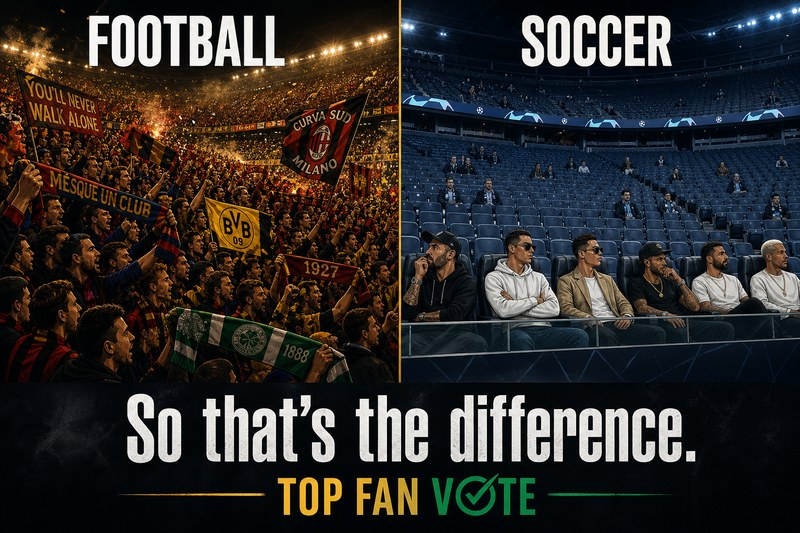

El Mundial 2026 empezó con tres fiestas de apertura — México, Canadá y Estados Unidos — y sin una ceremonia global única. En 48 horas los aficionados tenían dos imágenes que no van a dejar de discutir: 80.000 personas gritando el nombre de un chico de 17 en el Azteca y miles de asientos vacíos en la tele durante el segundo partido del torneo en Guadalajara. Mismo producto FIFA. Mismo fin de semana. Experiencia distinta.
Lo que México vivió
El Tri ganó — y un adolescente se robó la noche
México necesitaba un arranque fuerte. Quiñones marcó el primer gol del torneo; Jiménez cerró el 2–0 contra Sudáfrica. Pero el momento que se repetirá en redes llegó en el minuto 65: Gilberto Mora, 17 años, entró y se convirtió en el mexicano más joven en jugar un Mundial. En segundos el Azteca gritaba «¡Mora! ¡Mora! ¡Mora!».
Lo que FIFA enseñó en cámara
Guadalajara en silencio mientras México rugía
Horas después de la fiesta en Ciudad de México, Corea del Sur ganó 2–1 a Chequia en Guadalajara — buen partido. Lo que se viralizó fueron los bloques de asientos vacíos en el estadio durante el directo mundial.
Infantino había dicho que la demanda era «absolutamente loca». La imagen en TV preguntó otra cosa: si hay diez veces más demanda que oferta, ¿por qué hay filas vacías en el segundo partido? Lee el análisis completo en inglés con tabla de resultados y fuentes: opening weekend recap (EN).
El meme del fin de semana
El fútbol llena las gradas. El soccer llena el VIP.

Misma competición en el campo. Distinta tribuna en las gradas. Azteca lleno para Mora; SoFi con 70.492 para el 4–1 de EE. UU.; Guadalajara con sectores vacíos en el segundo partido del torneo.
Así es la diferencia — no el juego, sino el estadio donde se juega.
Tu voto
El grupo sigue — ¿cómo lo ve la grada?
Encuesta unofficial de aficionados (no FIFA): elige al campeón, tu favorito y cada partido de la fase de grupos con porcentajes en vivo.